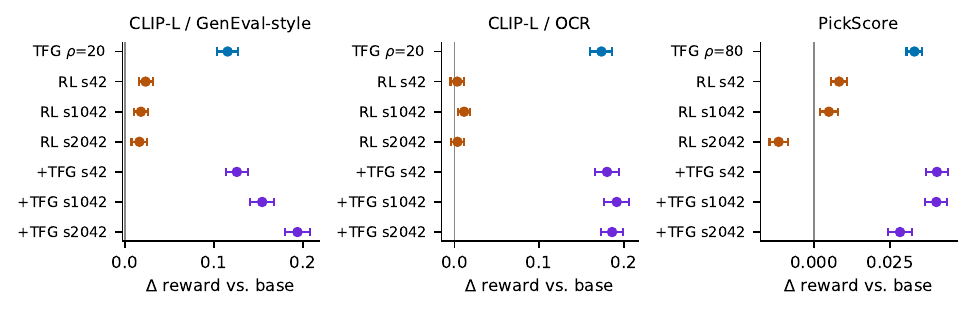
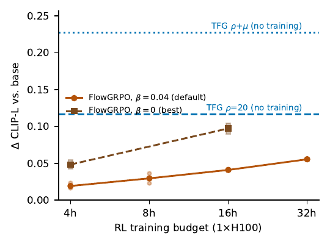
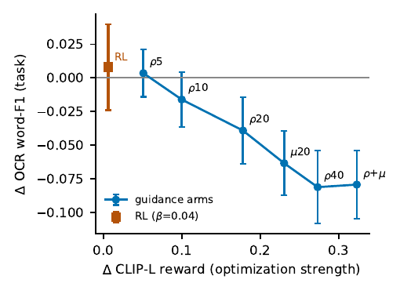

To make a flow-matching image model score higher on a reward, the reward can go in
two places: trained into the weights with reinforcement learning, or spent at sampling
time as guidance. Held to one backbone, one frozen reward model, and one budget, guidance
wins on every differentiable reward we test, by 1.6× to 7× over tuned RL, and
the margin is predictable before you train. The result is not a winner but a measured
map of conditions, each with a mechanism: guidance consumes the true per-sample reward
gradient where it applies, while RL must estimate that gradient from scalar rollouts and
amortize it into prompt-independent weights.

Matched-budget comparison on SD3.5-Medium. Training-free guidance improves
every one of 150 prompts on each differentiable reward; matched-budget RL trails by
1.6× (aesthetics) to 7× (text rendering), and single RL runs scatter.
Findings
Two cheap measurements predict the margin. The initial slope of the guidance
dose-response predicts how far guidance can push a reward; the cross-prompt similarity
of the reward gradient predicts how much of that RL can amortize. Together they are a
pre-flight diagnostic: you know which side of the map you are on before spending a
GPU-hour on training.
Training wins in two regimes, and only there. When the reward is
non-differentiable (guidance cannot run) and when it is fully prompt-independent. On a
prompt-independent aesthetic reward, three matched-budget RL seeds average +0.142 and
tie matched-strength guidance, the one place training closes the gap.
The default handicaps RL, and single runs mislead. A KL coefficient shipped
upstream quietly halves RL's gains; at the fair setting single runs still swing from
harmful to helpful across seeds, and below a rollout-group threshold training actively
destroys the policy. The comparison is only fair once these are controlled.
Guidance composes, with itself and with RL. Its cheaper denoised-estimate
branch beats the standard one and the two together double the gain; stacked on a
trained checkpoint the families add rather than cancel, and partially rescue a failed
run.
Reward gains convert weakly into task gains, worst for the strongest
optimizer. Under external, task-grounded audits (literal OCR readability, a
detector protocol, a cross-architecture judge), reward-model improvements dissociate
from real task improvements, and the dissociation widens with optimization strength.
Past a point the binding constraint is the reward model, not the optimizer.

Budget crossover on the text-alignment reward. Even at the corrected KL
setting and four times the budget, RL approaches but does not cross plain guidance, and
stays far below the composed two-branch configuration, which costs no training at all.

The reward-versus-task dissociation on text-rendering prompts. As optimization
strengthens, the reward climbs while literal word-F1 falls, crossing zero and declining
monotonically: the sharpest evidence that reward fidelity, not optimizer choice, is
the ceiling.
Reproduction
Every number in the paper recomputes from released per-prompt, per-seed evaluation
matrices under one prompt-clustered recipe, and every run is reproducible from the released
scripts: training uses fixed initialization and rollout seeds. Trained checkpoints and full
logs are provided where retained.
BibTeX
Citation will be posted when the preprint is up (in progress).
Figures and numbers are generated from the released evaluation data.